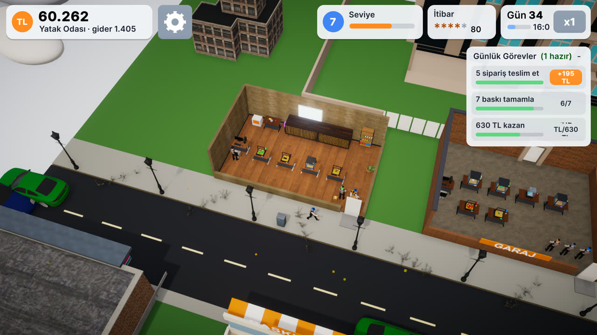
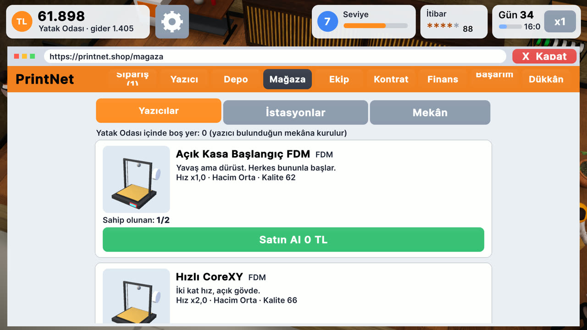
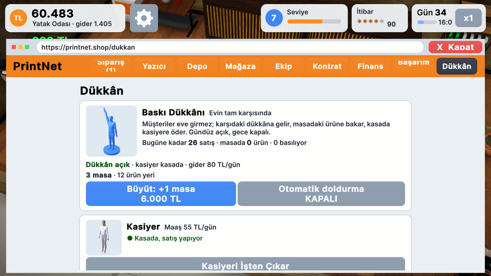
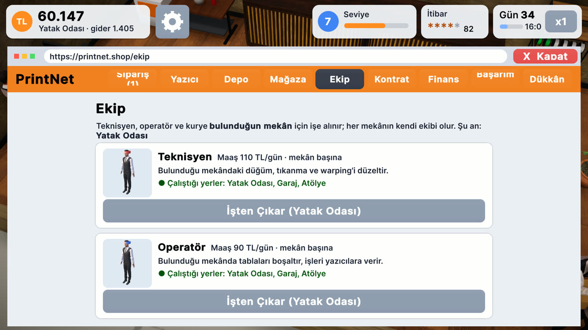

Oyun hakkında
Print & Craft Tycoon, bir 3D baskı atölyesini işletmeyi anlatan tek oyunculu bir yönetim simülasyonu. Yatak odandaki tek bir masaüstü yazıcıyla başlıyorsun: müşteri siparişlerini kabul ediyor, parçaları basıyor, tabladan alıp teslim ediyorsun. Para biriktikçe garaja, atölyeye, fabrikaya ve şehir merkezindeki amiral mağazaya taşınıyorsun.




Gerçek bir atölyenin dertleri
- PLA, PETG, ABS, TPU, karbon fiber PLA, reçine, kontrplak ve akrilik: her malzemenin renk renk ayrı stoku var.
- Filament zamanla nem çeker ve kaliteyi düşürür; kurutucu kurarsan düzelir.
- Nozullar aşınır. Düğüm, tıkanma, warping ve yanık lazer kesimi gibi arızaları küçük el oyunlarıyla sen onarırsın.
- Her sipariş için katman yüksekliği seçersin (0.28 / 0.20 / 0.12 mm): hız mı, kalite mi?
- FDM, reçine SLA ve lazer kesici: üç farklı teknoloji, üç farklı sipariş türü.
Büyüt
- Teknisyen, operatör, kurye, satış temsilcisi ve kasiyer işe al.
- Evin karşısındaki dükkânda vitrin kur, kurumsal sözleşmeler ve ihracat siparişleri al.
- Kira, maaş ve banka kredisini yönet.
Oyun internetsiz oynanır, ilerleme telefonunda kayıtlı kalır. Ücretsizdir; isteğe bağlı ödüllü reklamlar ve aralarda kısa reklamlar içerir. Uygulama içi satın alma yoktur.
Destek
İletişim: yucehantuna57@icloud.com
Hata bildirirken telefon modelini ve ne yaptığını kısaca yazarsan çok yardımcı olur. Genelde 2 gün içinde yanıtlarım.
Sık sorulanlar
İlerlemem nerede saklanıyor?
Yalnızca telefonunda; oyun her 20 saniyede kendiliğinden kaydeder. Oyunu silersen kayıt da silinir. Sağ üstteki Ayar düğmesinden ayrı kayıt yuvalarına yedek alabilirsin.
Baştan başlamak istiyorum.
Sağ üstteki Ayar düğmesi > Sıfırla.
Reklamları kapatabilir miyim?
Ödüllü reklamlar tamamen isteğe bağlıdır. Ara reklamlar seyrek gösterilir ve oyun kurallarını etkilemez.
Yazıcım "makara bitti" diyor.
Yazıcıya dokun ve yeni makara tak; gereken renk stokta yoksa oyun onu satın alıp takar. Önceden stok yapmak için bilgisayardaki malzeme sayfasını kullan.
English
Print & Craft Tycoon is a single-player management simulation about running a 3D printing workshop. Start with one desktop printer in your bedroom, take customer orders, print them, peel the part off the bed and deliver it. Grow into a garage, a workshop, a factory and a flagship store. Materials, colours, filament moisture, nozzle wear, print failures, slicing profiles and three machine technologies (FDM, resin SLA, laser cutting) are all simulated. The game is currently in Turkish.
Support: yucehantuna57@icloud.com · Privacy policy